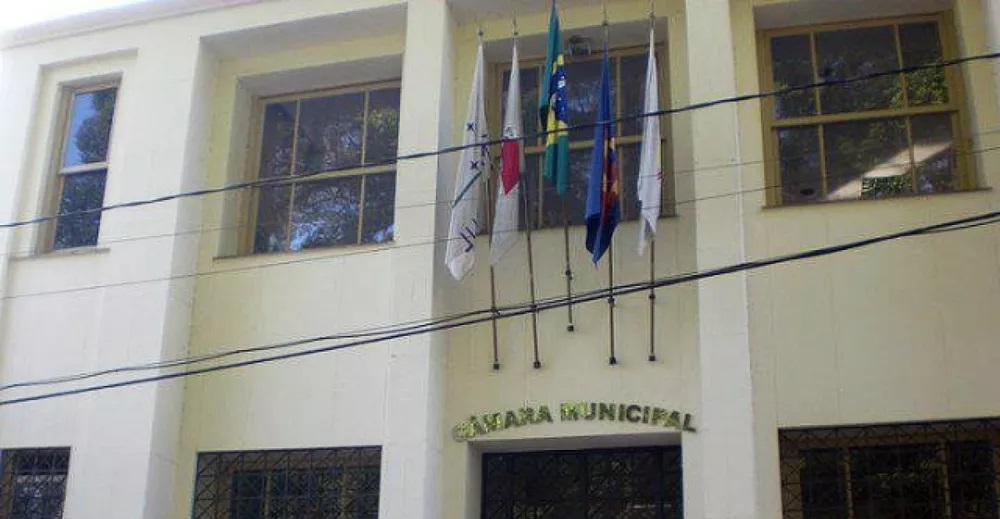

13 de outubro de 2022 - 16:00
As parcerias estarão sujeitas a fiscalização, com a cooperação dos usuários e à publicação prévia de edital de licitação que justifique conveniência e oportunidade de contratação.
A Câmara Municipal de Cataguases aprovou nesta semana o Projeto de Lei (PL) que dispõe sobre o Programa Municipal de Parcerias Público-Privadas (PPPs) e Concessões, encaminhado pelo prefeito José Henriques (MDB).
Segundo o Executivo, a lei aprovada traz pontos importantes, como a vedação de PPPs cujo valor do contrato seja inferior a R$ 10 milhões, o período de prestação de serviço seja inferior a cinco anos e que tenha como objeto único o fornecimento de mão de obra, o fornecimento e instalação de equipamentos ou a execução de obra pública.
A Prefeitura destacou ainda que as parecerias estarão sujeitas a fiscalização, com a cooperação dos usuários e à publicação prévia de edital de licitação que justifique conveniência e oportunidade de contratação, que caracterize também, o objeto, o prazo e o valor estimado.
“Esse Projeto de Lei é muito importante, pois ele permite grandes investimentos que podem melhorar diretamente a qualidade de vida dos cataguasenses. A intenção de aprovar a disciplina das PPPs na nossa cidade é que a Prefeitura, a Câmara Municipal e a população possam pactuar essas parcerias em que todos os envolvidos só têm a ganhar. Felizmente, conseguimos a aprovação e a partir de agora, nossa cidade pode receber grandes investimentos”, comentou.
Ele afirmou ainda que neste ano os trabalhos visam transformar Cataguases em uma Smart City – as chamadas cidades inteligentes – com toda a iluminação pública em LED, internet de qualidade em todas as praças públicas, inclusive nos distritos, além da geração de energia elétrica por meio de painéis fotovoltaicos que vão abastecer os prédios públicos municipais e proporcionar economia de recursos ao município.


Projeto final do Projeto Rio Pomba Valley, desenvolvido por Januária Holmes
 Facebook
Facebook Twitter
Twitter Whatsapp
Whatsapp